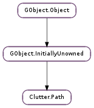

| static | new() |
| static | new_with_description(desc) |
| add_cairo_path(cpath) | |
| add_close() | |
| add_curve_to(x_1, y_1, x_2, y_2, x_3, y_3) | |
| add_line_to(x, y) | |
| add_move_to(x, y) | |
| add_node(node) | |
| add_rel_curve_to(x_1, y_1, x_2, y_2, x_3, y_3) | |
| add_rel_line_to(x, y) | |
| add_rel_move_to(x, y) | |
| add_string(str) | |
| clear() | |
| foreach(callback, *user_data) | |
| get_description() | |
| get_length() | |
| get_n_nodes() | |
| get_node(index_) | |
| get_nodes() | |
| get_position(progress) | |
| insert_node(index_, node) | |
| remove_node(index_) | |
| replace_node(index_, node) | |
| set_description(str) | |
| to_cairo_path(cr) |
| Name | Type | Flags | Description |
|---|---|---|---|
| description | str | r/w | SVG-style description of the path |
| length | int | r | An approximation of the total length of the path. |
None
| Name | Type | Access |
|---|---|---|
| parent | GObject.InitiallyUnowned | r |
Bases: GObject.InitiallyUnowned
The Clutter.Path struct contains only private data and should be accessed with the functions below.
| Returns: | the newly created Clutter.Path |
|---|---|
| Return type: | Clutter.Path |
Creates a new Clutter.Path instance with no nodes.
The object has a floating reference so if you add it to a Clutter.BehaviourPath then you do not need to unref it.
| Parameters: | desc (str) – a string describing the path |
|---|---|
| Returns: | the newly created Clutter.Path |
| Return type: | Clutter.Path |
Creates a new Clutter.Path instance with the nodes described in desc. See Clutter.Path.add_string () for details of the format of the string.
The object has a floating reference so if you add it to a Clutter.BehaviourPath then you do not need to unref it.
| Parameters: | cpath (cairo.Path) – a Cairo path |
|---|
Add the nodes of the Cairo path to the end of path.
Adds a Clutter.PathNodeType.CLOSE type node to the path. This creates a straight line from the last node to the last Clutter.PathNodeType.MOVE_TO type node.
| Parameters: |
|
|---|
Adds a Clutter.PathNodeType.CURVE_TO type node to the path. This causes the actor to follow a bezier from the last node to (x_3, y_3 ) using (x_1, y_1 ) and (x_2,`y_2` ) as control points.
| Parameters: |
|---|
Adds a Clutter.PathNodeType.LINE_TO type node to the path. This causes the actor to move to the new coordinates in a straight line.
| Parameters: |
|---|
Adds a Clutter.PathNodeType.MOVE_TO type node to the path. This is usually used as the first node in a path. It can also be used in the middle of the path to cause the actor to jump to the new coordinate.
| Parameters: | node (Clutter.PathNode) – a Clutter.PathNode |
|---|
Adds node to the end of the path.
| Parameters: |
|
|---|
Same as Clutter.Path.add_curve_to () except the coordinates are relative to the previous node.
| Parameters: |
|---|
Same as Clutter.Path.add_line_to () except the coordinates are relative to the previous node.
| Parameters: |
|---|
Same as Clutter.Path.add_move_to () except the coordinates are relative to the previous node.
| Parameters: | str (str) – a string describing the new nodes |
|---|---|
| Returns: | True is the path description was valid or False otherwise. |
| Return type: | bool |
Adds new nodes to the end of the path as described in str. The format is a subset of the SVG path format. Each node is represented by a letter and is followed by zero, one or three pairs of coordinates. The coordinates can be separated by spaces or a comma. The types are:
The M, L and C commands can also be specified in lower case which means the coordinates are relative to the previous node.
For example, to move an actor in a 100 by 100 pixel square centered on the point 300,300 you could use the following path:
M 250,350 l 0 -100 L 350,250 l 0 100 z
If the path description isn’t valid False will be returned and no nodes will be added.
Removes all nodes from the path.
| Parameters: |
|
|---|
Calls a function for each node of the path.
| Returns: | a string description of the path. Free with GLib.free (). |
|---|---|
| Return type: | str |
Returns a newly allocated string describing the path in the same format as used by Clutter.Path.add_string ().
| Returns: | the length of the path. |
|---|---|
| Return type: | int |
Retrieves an approximation of the total length of the path.
| Returns: | the number of nodes. |
|---|---|
| Return type: | int |
Retrieves the number of nodes in the path.
| Parameters: | index_ (int) – the node number to retrieve |
|---|---|
| Return type: | node: Clutter.PathNode |
Retrieves the node of the path indexed by index.
| Returns: | a list of nodes in the path. |
|---|---|
| Return type: | [Clutter.PathNode] |
Returns a GLib.SList of Clutter.PathNode s. The list should be freed with GLib.SList.free (). The nodes are owned by the path and should not be freed. Altering the path may cause the nodes in the list to become invalid so you should copy them if you want to keep the list.
| Parameters: | progress (float) – a position along the path as a fraction of its length |
|---|---|
| Returns: | index of the node used to calculate the position. |
| Return type: | int, position: Clutter.Knot |
The value in progress represents a position along the path where 0.0 is the beginning and 1.0 is the end of the path. An interpolated position is then stored in position.
| Parameters: |
|
|---|
Inserts node into the path before the node at the given offset. If index_ is negative it will append the node to the end of the path.
| Parameters: | index_ (int) – index of the node to remove |
|---|
Removes the node at the given offset from the path.
| Parameters: |
|
|---|
Replaces the node at offset index_ with node.
| Parameters: | str (str) – a string describing the path |
|---|---|
| Returns: | True is the path was valid, False otherwise. |
| Return type: | bool |
Replaces all of the nodes in the path with nodes described by str. See Clutter.Path.add_string () for details of the format.
If the string is invalid then False is returned and the path is unaltered.
| Parameters: | cr (cairo.Context) – a Cairo context |
|---|
Add the nodes of the Clutter.Path to the path in the Cairo context.